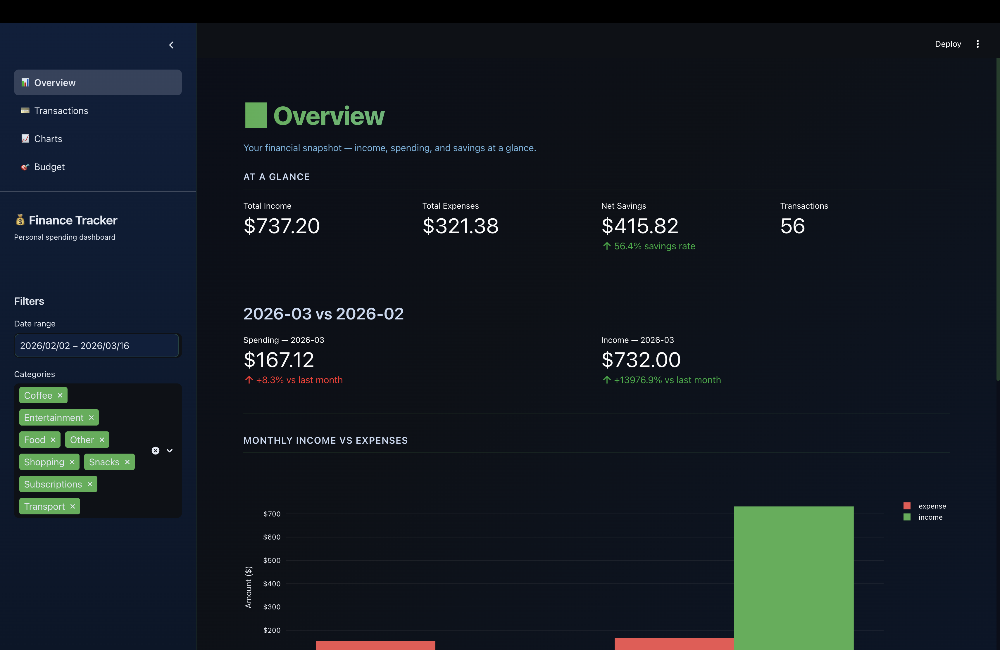
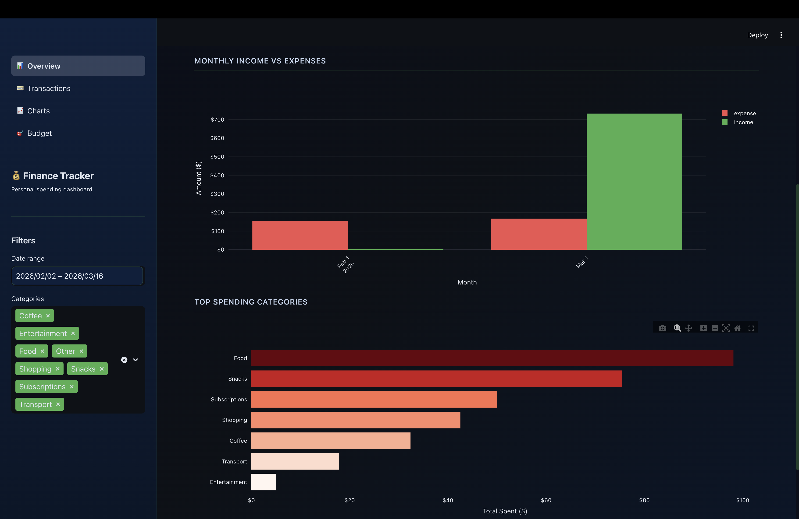
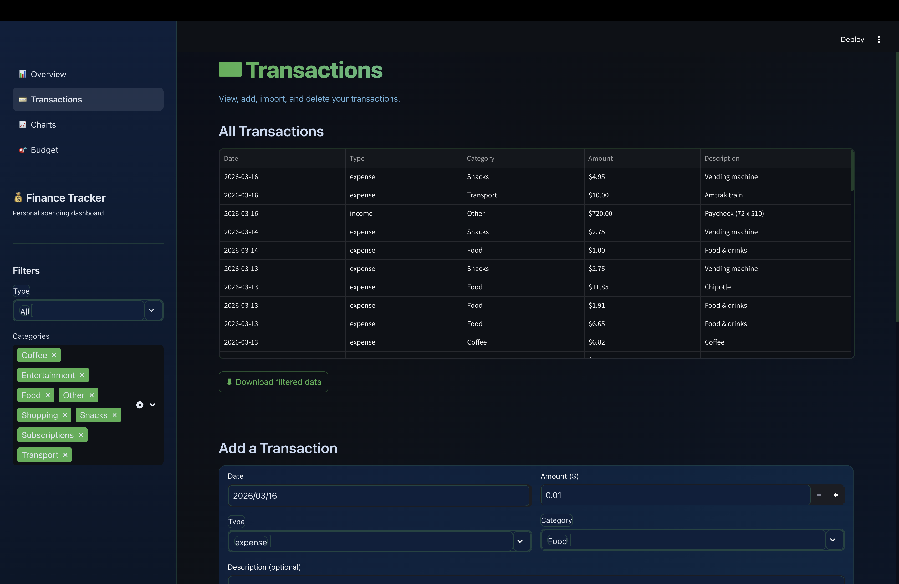
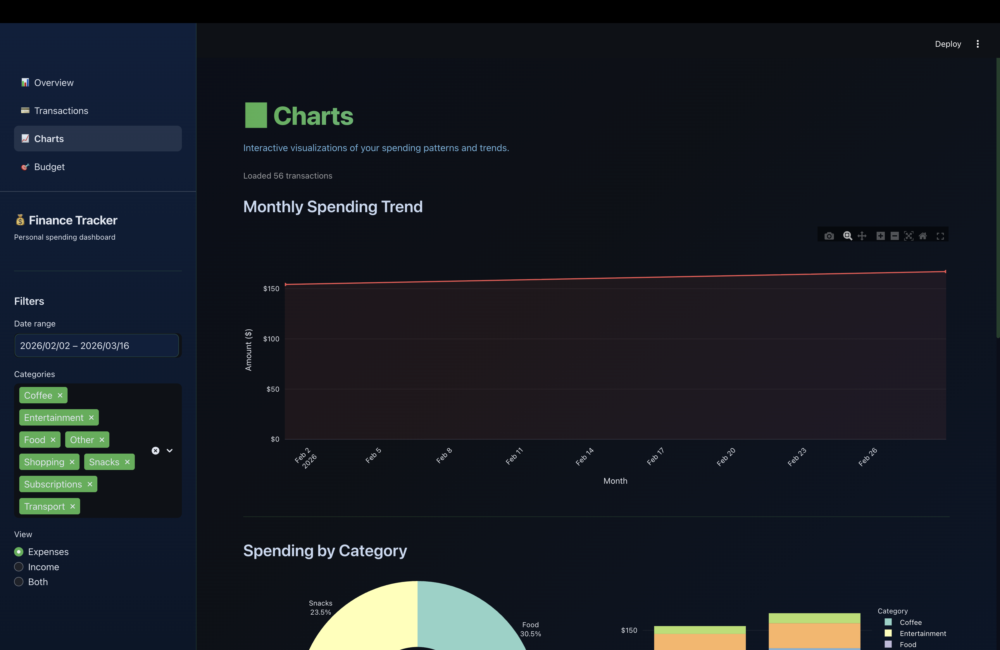
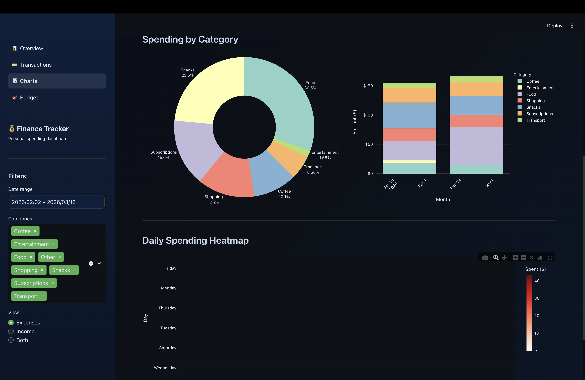
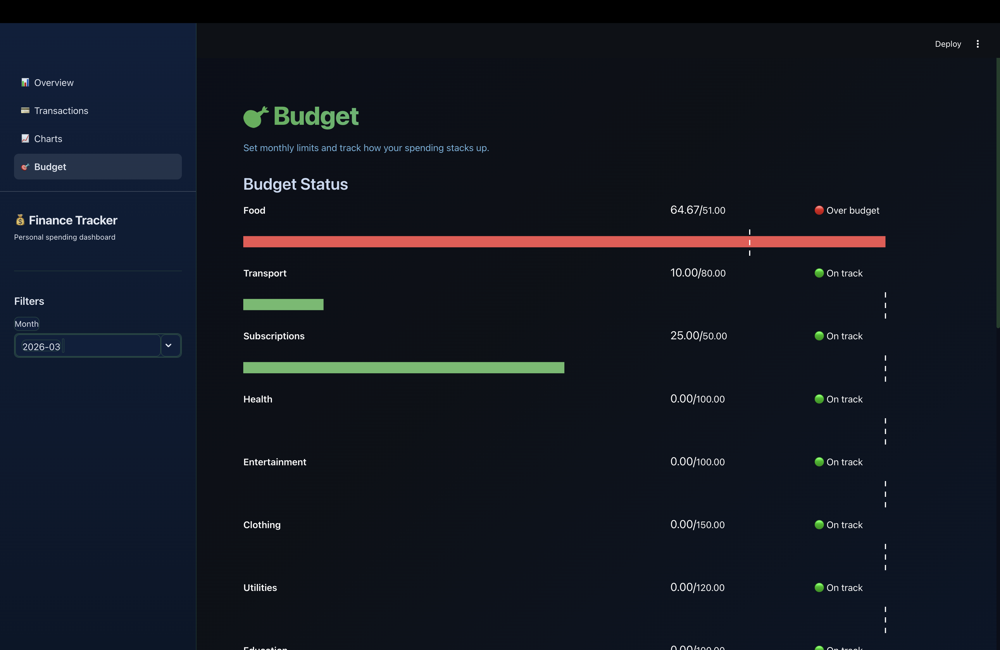

A Python-powered dashboard for tracking spending habits, visualizing financial trends, and building smarter budgets.
Personal Finance Tracker is a data-driven desktop application built in Python that helps users take control of their finances. The app lets you log income and expenses, categorize transactions, and then visualizes spending patterns through clean, interactive charts.
The core data pipeline uses Pandas for loading, cleaning, and aggregating transaction data from CSV files. Matplotlib handles all chart rendering — from monthly spending breakdowns to category-by-category pie charts and trend lines over time.
This project came from a real need — I wanted to actually understand where my money was going each month. Building it myself meant I could tailor the categories, metrics, and visualizations exactly to what was useful, rather than working around a generic app's limitations.






Log and categorize income and expenses via CSV import. Pandas handles cleaning, deduplication, and aggregation automatically.
Monthly bar charts, category pie charts, and trend lines built with Matplotlib give a clear picture of where money is going.
Fully customizable spending categories — food, transport, subscriptions, and more — tailored to real spending habits.
Set monthly budget limits per category and get visual indicators when spending approaches or exceeds the target.